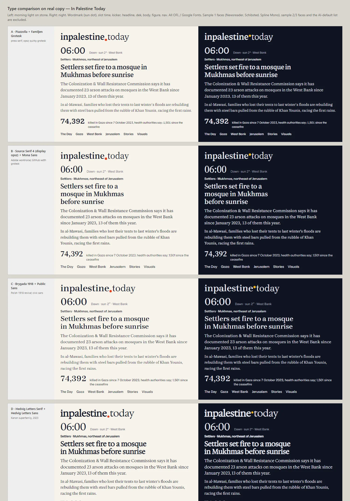
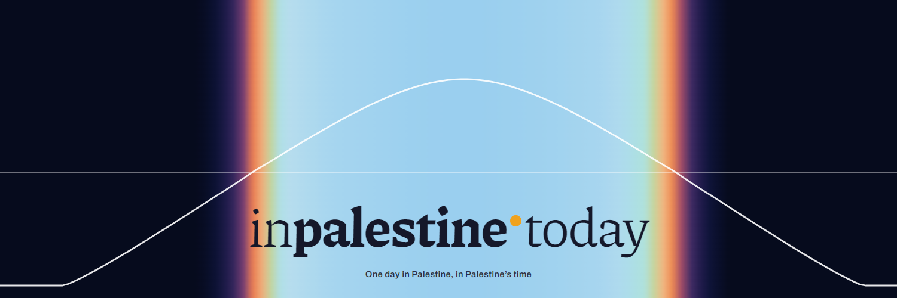
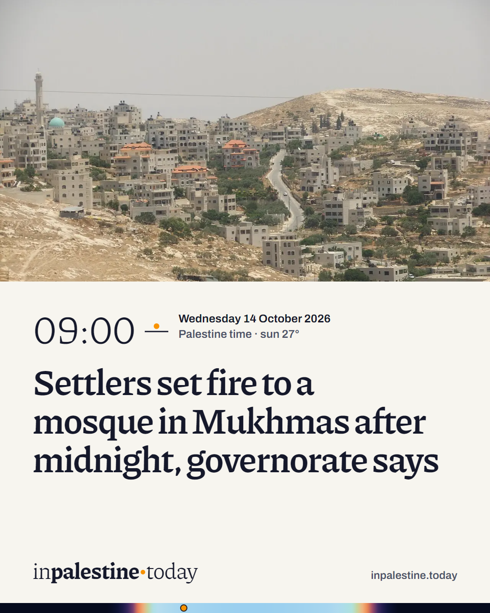

A site that keeps Palestine’s clock and Palestine’s light. Its full stop is the sun, standing at its real height over Jerusalem.
Identity book for inpalestine.today · October 2026
--:--Palestine time—Sun over Jerusalem—Light
Dawn · The idea
Palestine’s clock, Palestine’s light
In Palestine Today says it wants to bring “the world closer to Palestine, one story at a time.” The identity takes that literally. Wherever you read it, the site is set to Palestine.
Its clock runs on Palestine’s own time zone, Asia/Hebron, not the reader’s. Its light is the sun over Jerusalem right now: the page is pale stone at noon, honey in the afternoon, violet at dusk and dark at night. Its unit is the day. The homepage tells one day in order, from the night’s raids to the last report before midnight, and each part of that day is printed in the light it happened in.
The outlet had no real logo, so the mark comes from the one thing it already owned, its address. In inpalestine.today the full stop is the sun. The baseline is the horizon and the ascender line is the zenith, and the stop climbs and sinks with the real sun. At night it becomes the moon, drawn in that night’s phase.
The client chose the first sample, “The Day”: a homepage built as the day’s running order, its colour moving from morning to night. This identity keeps that idea and makes it measured instead of illustrated. The times come from the sun’s position, the colours from its altitude, and every story sits on the sun’s real path.
What it refuses
It doesn’t ship a latest-first feed under a red “breaking” bar, the page every outlet in the category already has. It doesn’t use a flag, a keffiyeh pattern or a watermelon as decoration. And it doesn’t use cream paper, an italic serif and small monospace labels, the costume an AI-generated “editorial” site wears by default. The colour here is light, and it changes because the sun does.
Sunrise · The mark
The full stop is the sun
The wordmark is the domain, set in Piazzolla at two weights so it reads without spaces: in and today at 370, palestine at 720. Between “palestine” and “today” sits one round stop, slightly larger than the font’s own, and that stop is the sun.
inpalestinetoday
A day of the mark
The same mark through today in Palestine, each frame in its hour’s light. Above the horizon the stop climbs one ascender-height per 72°. From sunset to the end of civil twilight (−6°) it sinks halfway into the baseline and no further, so the word never splits. After that the stop is the moon, drawn in tonight’s phase.
The monogram
“in.” is for small spaces: social avatars, the favicon, the app icon. It keeps the same two weights and the same sun. Static files show the canonical state, sunrise, with the sun resting on the horizon. On the site the favicon follows the real sun.
Night · avatar defaultShadow · faviconStone · print, letterheadLive favicon · now
Space and size
Keep clear space of two sun diameters (0.41 em) on every side. The wordmark stays at least 120 px or 30 mm wide, where the stop is still a round disc a little over 3 px across. Below that, use the monogram, which holds down to 16 px.
inpalestinetoday48 px · masthead
inpalestinetoday24 px · reading bar
inpalestinetoday120 px wide · minimum
32 px
16 px · minimum
Don’t
in palestine todayDon’t add spaces. The two weights do the separating.inpalestinetodayDon’t recolour the sun. Its colour comes from its altitude, from horizon red to noon gold.inpalestinetodayDon’t set it in one weight. “palestine” is the heavy word.inpalestinetodayDon’t add a glow or rays. The sun is a plain disc.inpalestinetodayDon’t set it in capitals. A capital T would block the sun’s path.inpalestinetodayDon’t retype it. Use the files, or the live HTML mark on the site.
Morning · Light
Ten lights, one day
The palette is light falling on Palestinian limestone through a day. Each light has a ground for reading by day and one for reading in the dark. They are written in OKLCH so the hue can travel from rose to white to honey to violet without the lightness drifting. Between two lights the page blends, minute by minute, pinned to that day’s real sunrise, noon and sunset.
Times are today’s, computed for Jerusalem. Contrast is ink on ground, measured live. Every light passes WCAG AA for body text in both its day and dark grounds.
The sun’s own colour
The stop, the now marker and the beads on the Day Dial share one colour that tracks the sun’s altitude: red on the horizon, orange in the golden hour, gold when high. This is the only saturated colour the brand owns, and it is reserved for the sun and for “now”. It is never used for decoration, buttons or warnings.
The sky, for the Day Dial
The dial is the only place the page shows the sky itself, at full colour: the real sky over Palestine for the edition’s day, sampled every ten minutes.
Constants
Shadow#15182A · ink. A shadow under a clear sky is blue.
Night#0E1120 · ground after nautical dusk
Moonlight#E9E8F0 · ink at night
Stone#F5F3EE · print ground
First sun#E4401F · the stop at sunrise, print
Noon gold#F0A21E · the sun high
The reader decides
By default the page follows Palestine’s sky. A reader who needs a fixed page can choose Always light or Always dark from the light switch in the top strip. The parts of the day keep their hues either way, and only the lightness is fixed. The choice is remembered on that device.
Midday · Type
Two voices: people, and the sun
Ag
Piazzolla
Huerta Tipográfica, Argentina. Designed for the press and released under the Open Font License. It carries the people: the wordmark, headlines, reading, small caps and the slot times. Its optical-size axis sharpens headlines and opens up body text, and it has three kinds of figures, so a time, a total and a year inside a sentence each get the right numerals.
Omnibus-Type, Buenos Aires, Open Font License: the same city as Piazzolla’s foundry, and the same press-first habits. It carries the sun’s instruments: the live clock, the Day Dial, altitudes, navigation and captions. Its width axis runs the dial’s labels narrow and keeps the clock wide, and its figures are tabular.
Twelve pairings were set on the day’s real copy in morning light and in night, each with a wordmark, a slot time, a headline, a dek, a figure and the navigation. Faces from the three earlier samples were excluded (Newsreader, Schibsted Grotesk, Spline Sans Mono, Literata, Young Serif, Hanken Grotesk), and so were the faces AI-generated sites reach for by default. Piazzolla won on headline density and on numerals that read as engraved at large sizes. A second round tested its weights for the wordmark and five sans partners for the instrument voice. Mona Sans came first on its clock-like zero, then went out as part of the GitHub default wave. Archivo took the voice instead: a grotesque with a real width axis, from the same city as Piazzolla.

Round one, first four of twelve pairings. Full sheets: research/fonts.html and fonts2.html.
Scale
Lead headlinePiazzolla 620 · opsz 30 · 37–66 px / 1.02 · −0.022 em
Settlers set fire to a mosque in Mukhmas after midnight
Part of the dayPiazzolla 400 · opsz 30 · 28–42 px / 1.08
Times: tabular lining, so a column of times aligns.
since January 2023, 13 of them this year
In running text: oldstyle, so numbers sit in the line like words.
74,392
Figures in the ledger: lining, tabular, never animated.
Afternoon · Elements
Stories strung on the sun’s path
The Day Dial
Twenty-four hours of the edition’s sky, with the sun’s real altitude drawn across it, solid above the horizon and dashed beneath it. Each slot is a bead on that path, placed at the minute it was filed and coloured by the sun at that minute. Leader lines run down from each bead to the running order, which is the same list as plain links.
Every slot carries the sun as it stood when the slot was filed: a horizon line and the sun at that height, with the altitude in degrees beside it. Its state is drawn rather than coloured. A filled sun means published, a ring means updated, and a dashed ring means scheduled.
Published. Filled sun at its altitude, 09:00 · .Updated. A ring: the story moved after it was filed.Scheduled, or night. A dashed ring before it happens; a plain ring once the sun is down.
A slot
The time is in Piazzolla Light, the sun stamp sits under it, and the dateline opens the dek in small caps. The kind of story goes in the source line, and the figures go in a ledger with a source under every number. There is no kicker above the headline, no badge and no card.
Mukhmas, northeast of Jerusalem — The attack came after midnight in the village northeast of Jerusalem; the Israeli military said no suspects were identified and it had opened an investigation.
Update · Source: WAFA, 14 Oct, 09:00 · the ring on the stamp means the story moved later in the day
Golden hour · Motion
Everything moves at the sun’s pace
Motion here is the sun’s own: slow, continuous, sine in and out. Nothing bounces, snaps or pops. Content never waits on an animation: every story is visible from the first paint, and motion only changes light and position.
The loader: every visit begins at first light
It plays on the first visit of a session and never again. Tap, Enter or Escape skips it. With reduced motion it doesn’t play at all.
From under the baseline to its real height now, warming from red to its colour. At night the moon takes the stop instead.
The words settle
640 ms
expo out, 90 ms apart
in, palestine, today, rising 0.18 em into place.
The lockup docks
680 ms
cubic in-out
The same mark moves and shrinks into the masthead while the ground turns to the light of the hour.
Light changes
1100 ms
sine in-out
When the sun crosses into a new light, or the reader moves into another part of the day.
The dial draws the day
1600 ms
sine in-out, once
The sun’s path traces left to right when the dial comes into view, and each bead appears as the line reaches its minute.
The stop moves
1200 ms
sine in-out
On a light change, or while the reader drags the sun. Live, it moves a few hundredths of an em an hour.
What it won’t do
No headlines revealed word by word, no sections sliding in as you scroll, no counting-up numbers, no parallax and no hover effects on photographs. A death toll is never animated.
Sunset · Voice
Human first, every figure sourced
Headlines are in sentence case and the active voice, short enough to say aloud. People come before numbers, and every number names who counted it. Times are always Palestine time, and the site never shows the reader’s local time.
Yes
Families in al-Mawasi rebuild their tents with steel pulled from the rubble
No
HEARTBREAKING: Gaza families forced to live in tents
Yes
2,027 patients died waiting for treatment or evacuation, Gaza medical relief director says
No
Over 2,000 patients die as world watches
Terms
Time
06:41 Palestine time, 24-hour clock, never the reader’s zone. Dates are written “Wednesday 14 October 2026”.
Attribution
Each figure and each accusation names its source in the same sentence: “the official WAFA agency reported”, “according to UN OCHA”.
Killed
Use “killed”, with the source that counted the dead. Within a quote, keep the speaker’s own word.
Forces and settlers
Israeli forces, settlers, the occupied West Bank, occupied East Jerusalem.
Prisoners
Palestinian prisoners and detainees; administrative detention means held without charge or trial.
Places
English forms in AP style: Mukhmas, Turmus Ayya, Kafr Malik, Masafer Yatta, al-Mawasi, Khan Younis, Issawiya, Silwan, al-Aqsa Mosque.
People
Children are never named. Private people are named only with their consent, and officials by their title.
Dusk · Photography
Photographs keep their own light
The page changes its light and photographs never do: there is no tint, no duotone and no time-of-day grade over someone’s picture. A photo sits beside the story it shows and no other. Archive photographs say so in the caption, with the date and place they were really taken.
Captions follow one order: what and where, when it was taken, then the credit and licence. Families shelter in tents in al-Mawasi, Khan Younis, February 2025. Archive photo: author, via Wikimedia Commons, CC BY-SA 4.0.
Night · Applications
The day, carried out of the site
The Day, at first light · 1080 × 1350. Posted at first light each morning, on the ground of that hour, with the day’s sky as a band and three of its slots.A story · 1080 × 1350. The photo stays untouched. The panel takes the light of the hour the story was filed, and the stamp gives the time and the sun.Link preview · 1200 × 630. Rendered for the hour the link is shared.
The site, page by page
Every template keeps the time gutter, the sun stamp and the two voices. A report is read in the light of the minute it was filed, and a desk is the same record cut by place, day by day.
The DayOne edition, midnight to midnight, each part of the day in its own light, with the Day Dial.
A reportFiled time and sun, the dek with its dateline, the sources “on whose word”, the figures, the rest of its hour, and where it sits in the day.
A storyThe same frame at a longer measure, a full-width photograph and the quote set large.
A deskGaza, the West Bank, Jerusalem, Prisoners and World: the record cut by place, each day with its own small sky.
A threadOne running story across the days. Here, the olive harvest.
The DaysEvery edition, and the month in Palestine’s sky, row by row, clock changes included.
In picturesThe places in the news from the archive, each photograph beside the report it goes with.
SearchBy words, day, desk and the light of the hour.
Who we arePalestine time, how we source, corrections and contact, in draft for the newsroom.
sun.jsThe sun, as codePalestine clock, solar position, the day’s events, moon phase, light modelView
The social kit, app icons and the newsletter
Profile picturesPNG, 800 × 800, in shadow, night and stoneShadowNightStone

CoversPNG: the day’s sky with the sun’s path, the wordmark in the noon lightXFacebookYouTubeLinkedIn

Instagram templatesPNG: a report in the light of its minute, as a post (1080 × 1350) and a story (1080 × 1920)PostStory
App and browser iconsPNG: home-screen icon, maskable icon and a 32 px favicon, with the web app manifest180 px512 pxMaskableManifest
@The Day by emailThe newsletter for 14 October, sent at first light the next morningView
RSSThe feedRSS 2.0, the latest 40 reports, each with its share cardView
Sample details to replace before launch, all in one file (tools/site.json): staff names and desks, social accounts, contact addresses, the publisher’s address and the newsletter service.